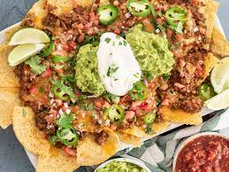

Nachos

Desription
How to make a delicious baked nachos. Honestly, it is the best.
Ingredients
- Corn Chips
- 2 cans of beans
- 1 jar of past suace
- Cayan Pepper
- Feta cheese
- Tasty cheese
- Greek yoghurt
Steps
- Add the beans and pasta sauce into a medium mixing bowl
- Crumb the feta and add to the mixing bowl
- Put 10 shakes of cayan pepper into the mixing bowl
- Mix the ingredients together
- Place a handful of cornchips into 2 small baking dishes
- Split the bean mix evenly between the 2 baking dishes
- Put some grated cheese ontop and cook at 180C for 20 minutes
- When ready, serve with 1 table spoon of greek yoghurt